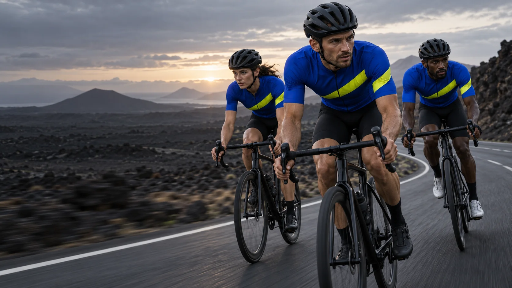
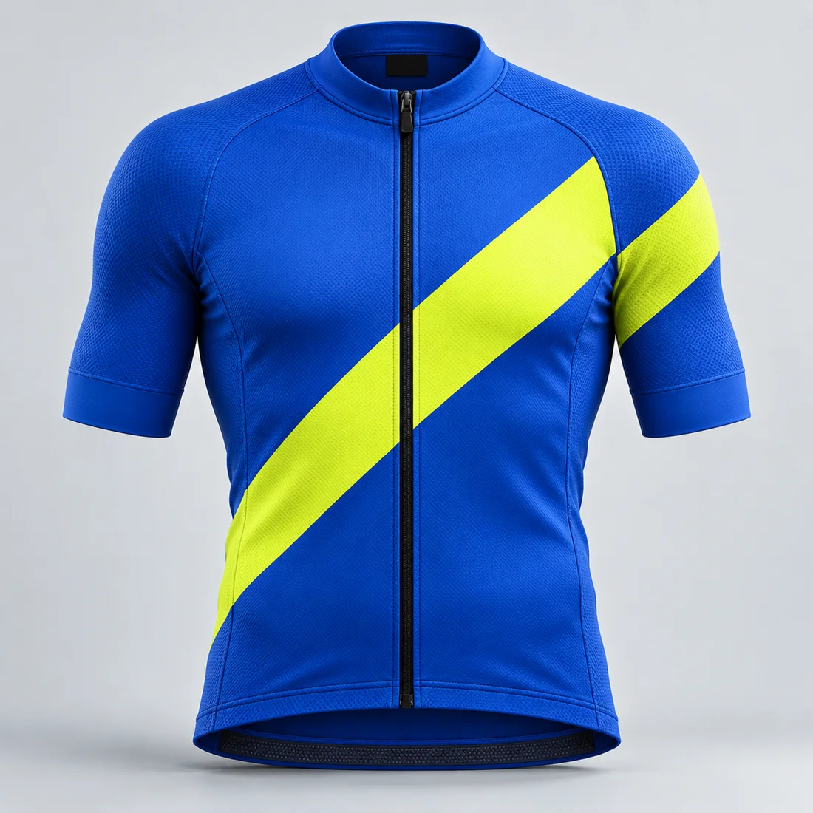

02 / RIFT / Self-initiated concept
A shared pace.
A sharper identity.
A cycling apparel concept built around the energy of riding together. A graphic identity, an original campaign and a storefront that gets straight to the kit.
Explore the storefront
The brief
Give the group ride
an unmistakable signal.
The fictional audience is the club rider who cares about both the ride and the look of their kit. The design challenge: bring collective spirit to a cycling brand without burying the garment under a catalogue of performance promises.
One jersey anchors the concept. The storefront needs to show it clearly, explain the design, make size selection visible and let a visitor try the bag interaction.
The identity
One cut.
Every surface.
A rising diagonal becomes the shared signature: on the jersey, through the wordmark and across the page. It gives the system a sense of direction without depending on animation.
Cobalt carries the brand. Acid yellow marks the route and the primary action. Compact, heavy sans lettering borrows its directness from race signage; clear body text keeps the shopping decisions easy to read.
Move together. Make your mark.
#1643E6Acid
#DFFF00Carbon
#101114

The digital experience
The kit first.
The choice next.
Campaign photography introduces the collective. A quieter product view then puts the garment in focus. One colour and five explicit size choices keep this first release easy to navigate.
Selected size, validation, bag quantities and removal have visible feedback. The mobile layout keeps product information beside the decision it supports, and native controls make the core flow usable by keyboard.
Try the local bag interactionScope & transparency
A designed concept.
A working prototype.
RIFT is fictional, self-initiated portfolio work. Brand direction, page design and the graphic system were developed for this project; campaign and jersey images were generated with AI and selected through art direction.
The static storefront includes a browser-local demo bag. It has no checkout, real inventory, payments or Shopify integration. Prices and sizing are illustrative. Image details are conceptual, with variation between campaign and product views.
No client commission, customer research or commercial results are claimed. A production release would need real garment photography, validated sizing, inventory and platform integration.